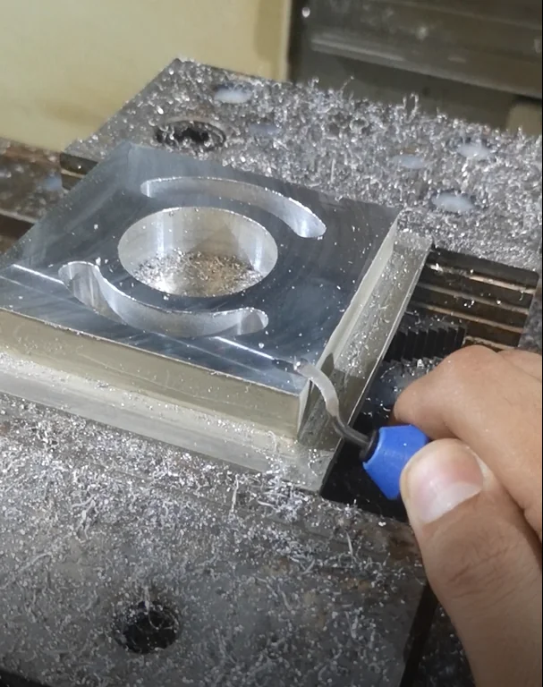
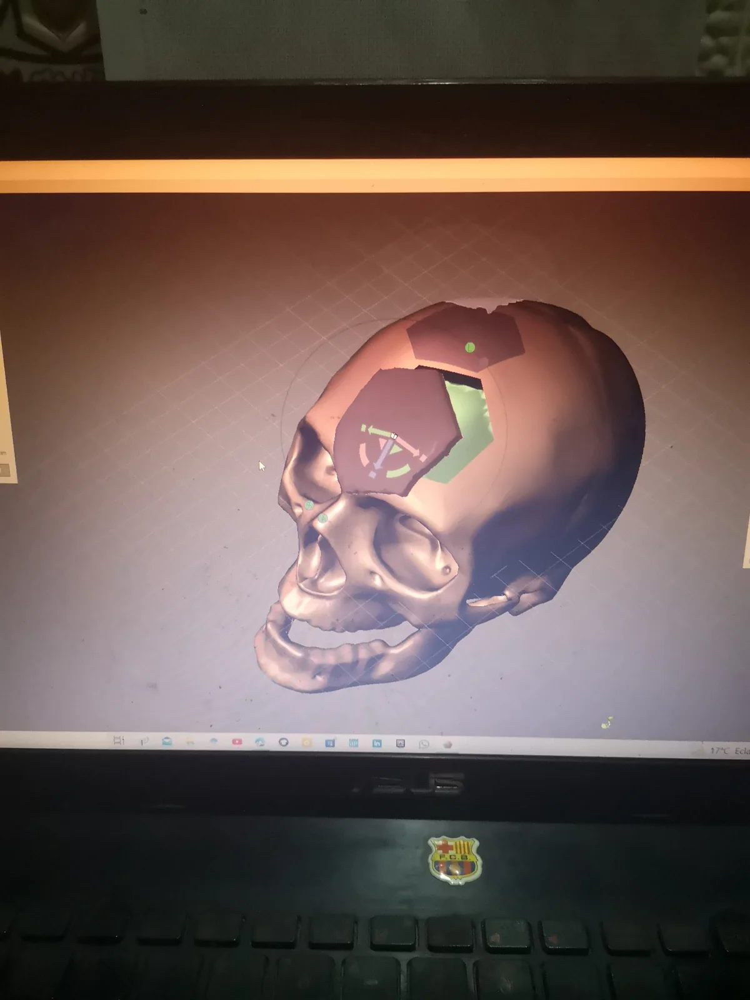
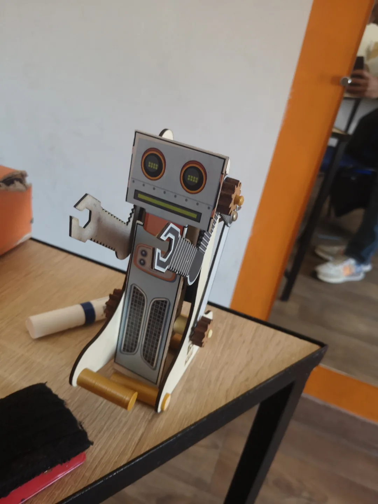
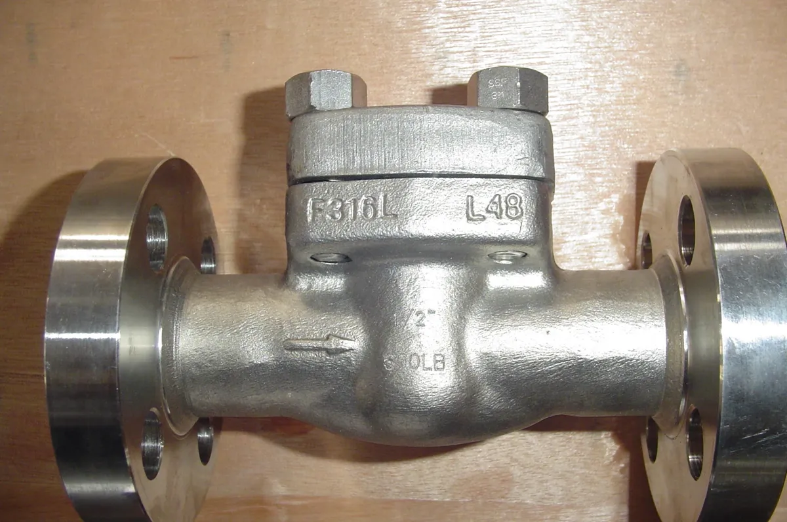
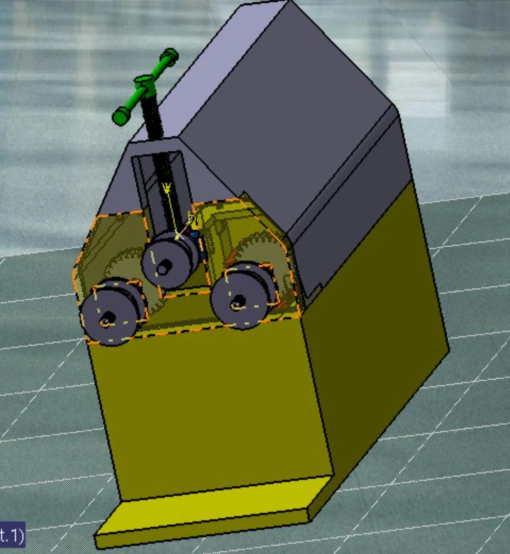

PROJECT INDEX / 13 CASE STUDIES
Engineering work,
from every angle.
Design, calculations and practical fabrication from industrial placements, freelance work and academic projects.
13 projects

ManufacturingUEMF: from CAD to the workshop
CAD, CAM, CNC machining, molds, additive post-processing and instrumentation in one hands-on laboratory experience.

DesignCranial reconstruction & mold concept
Turning irregular anatomical geometry into a fitted implant concept and a mold-design study.
 Simulation
SimulationFuselage structural analysis
A fuselage-section design study connecting parametric geometry to static and modal FEA.
 Design
DesignConnector locking redesign
Functional analysis, parametric CAD and ANSYS assessment of an automotive connector locking system.

ManufacturingSTEM kits: designed, made, assembled
Mechanism design and fabrication through laser cutting, FDM and hands-on assembly.

Reference imageIndustrial valves & CAD automation
Large valve assemblies, manufacturing drawings and Excel/VBA tools for repeated CAD configuration work.
 Process
ProcessDrone mission workflow improvement
Following agricultural-drone operations from preparation to the field, then organizing tracking and maintenance.
 Simulation
SimulationShell-and-tube thermal sizing
Connecting heat duty, LMTD/NTU methods and pressure loss to exchanger geometry.

DesignThree-roll bending machine
A machine-design study from bending motion and roller adjustment to the supporting frame.
 Simulation
SimulationNACA airfoils in MATLAB
Comparing cambered NACA 2412 and symmetric NACA 0012 profiles across angle of attack.
 Simulation
SimulationGamma Stirling engine study
Linking engine geometry, mechanism motion and theoretical heat-to-work conversion.
 Design
DesignSteel platform & access structure
Coordinating the main structure and access arrangement in an original SolidWorks model.
 Reference image
Reference imageMoody diagram in MATLAB
Solving an implicit turbulent-flow relation by fixed-point iteration in MATLAB.
No matching projects
Try a different keyword or clear the filters.